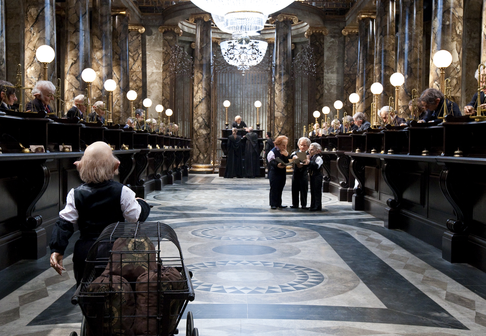

The Leaky Cauldron

Популярный паб, находящийся со стороны Лондона на Чаринг-Кросс-Роуд. Через задний двор паба можно пройти в Косой переулок, трижды коснувшись волшебной палочкой кирпича над урной («Три вверх... два в сторону...») и открыв арку.
Ollivander's Wand Shop

Олливандеры — самые лучшие изготовители волшебных палочек в Англии. Фамилия этих мастеров известна уже более 2000 лет.
Gringotts Wizard Bank
Единственный волшебный банк в мире.
Weasley's Wizard Wheezes

Магазин шуточных товаров от Фреда и Джорджа Уизли.
Eeylop's Owl Emporium

Мрачный на вид зоомагазин, где продают различные виды почтовых сов (неясыти обыкновенные, сипухи, ушастые и полярные совы и др.), еду для них (совиные вафли, например) и другие товары, необходимые в уходе за этими птицами.
Flourish and Blotts

Самый известный книжный магазин в Косом Переулке. Существует с 1654 года. Основан волшебниками Флоришем и Блоттсом.
Quality Quidditch Supplies

Магазин для покупки мётел и всевозможных принадлежностей для квиддича.
Madam Malkin's Robes for All Occasions

Ателье-магазин, который находится в Косом Переулке и является самым посещаемым магазином одежды. Здесь можно не только купить готовые мантии, но и подогнать их по фигуре.
The Magical Menagerie

Магазин, продающий не только сов, но и многих других животных.